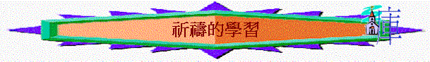

祈禱的學習
＠──代表遊戲或活動或發問 ～──代表講解
引起動機遊戲：
＠試講出太17:14-21的人物
@其中一個團友說明這件耶穌趕鬼的事蹟
@分組角式扮演這事蹟，看那組扮演得最好
～這事蹟我們看到耶穌能趕出鬼，被鬼附人的父親及門徒卻不能，為何他們不能？（成為我們的提醒）
講解
一．沒第一時間找耶穌
＠若團友今天不見了錢包，你第一件事情會找誰／怎做？
～昔日被鬼附人的父親及門徒卻不是先找耶穌，而是用自己的方法解決
二．沒祈禱
＠做一項調查，團友除了謝飯祈禱及上宗教堂有祈禱外，平均一星期有幾多次認真祈禱
～昔日他們也沒有祈禱，用自己能力解決，耶穌卻說要禁食祈禱（代表專心）
～鼓勵團友每日／每晚有祈禱的時間
三．沒信心
～門徒沒信心，所以不能趕鬼
～若有人有一點信心，大山也可投深海
～導師講出一兩件聖經題及有信心的事蹟
@團友也可分享祈禱蒙應允的經歷（導師也可分享）
＠每人寫出一件的困難／心願，試分享，你又有沒有信心，神若肯的一定可以解決？
祈禱
＊每項講解可加一些例子或喻道故事：可參考喻道例子書＊